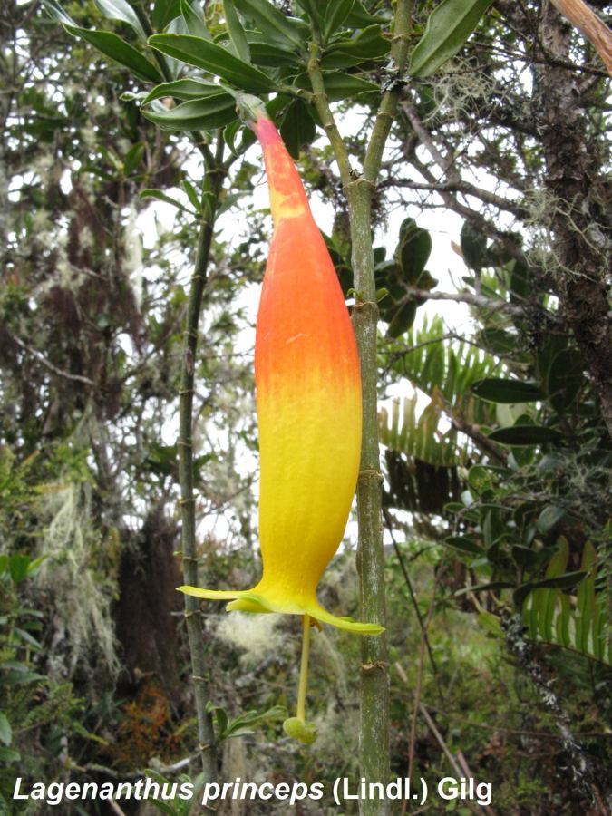
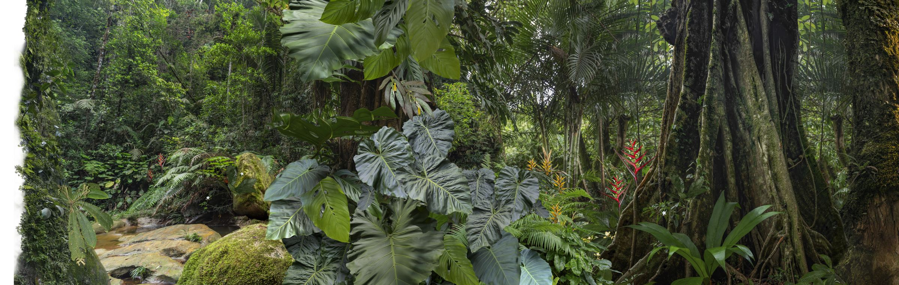
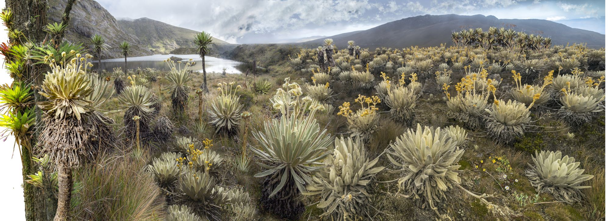
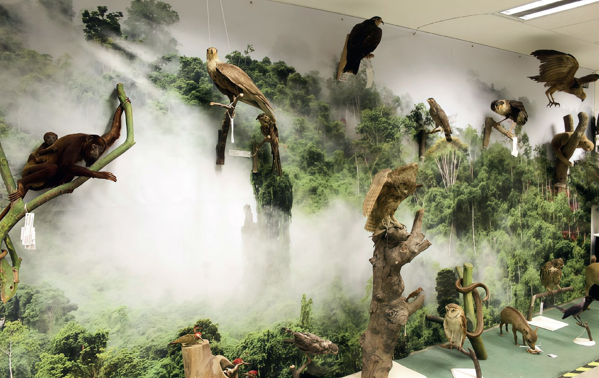
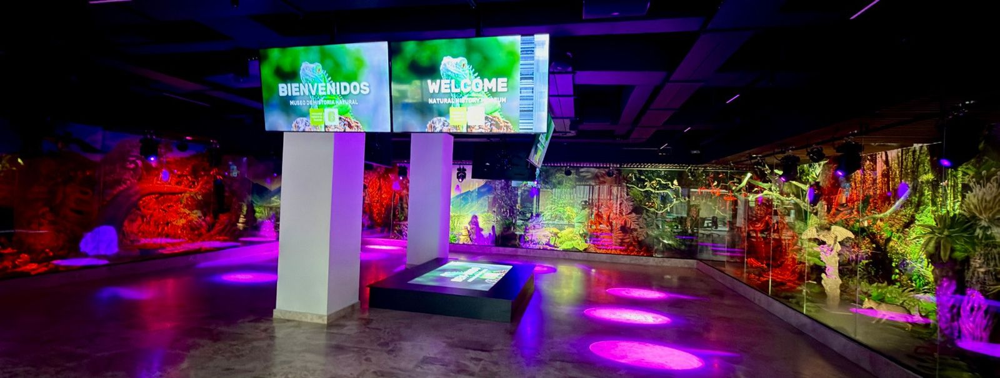
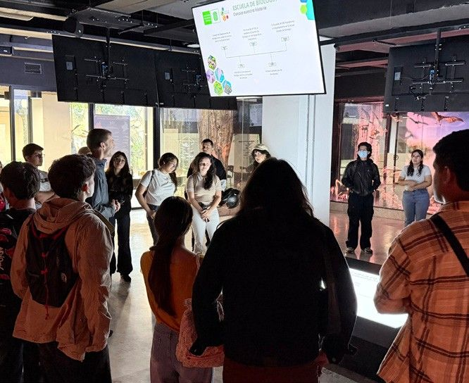
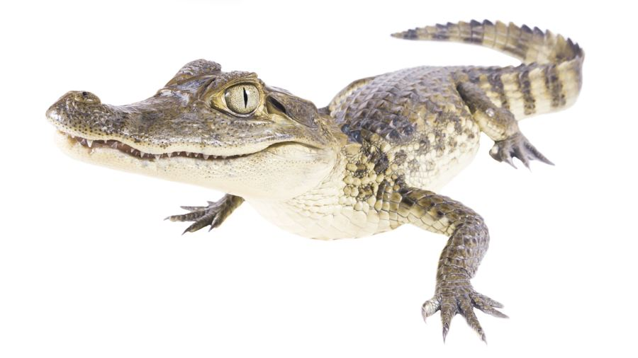
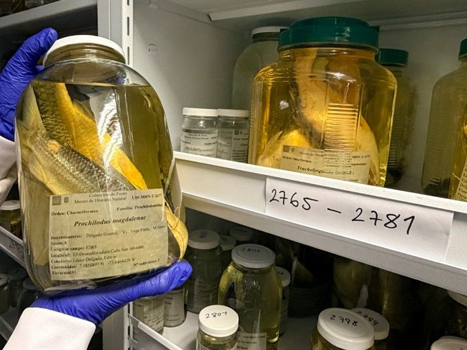
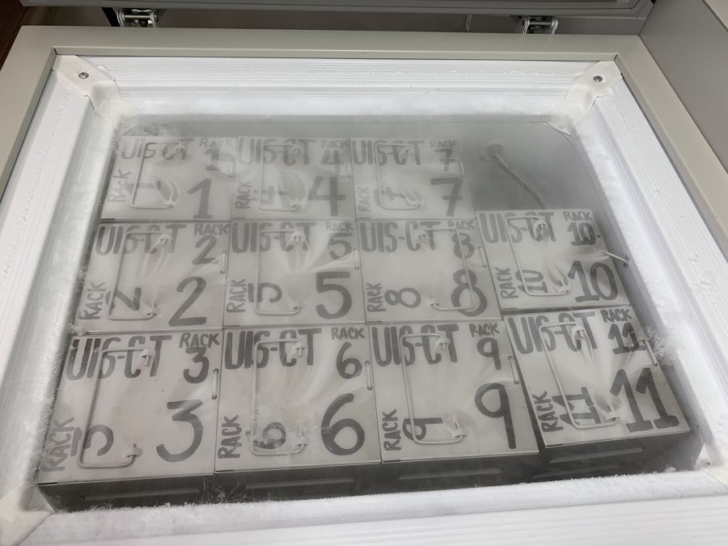
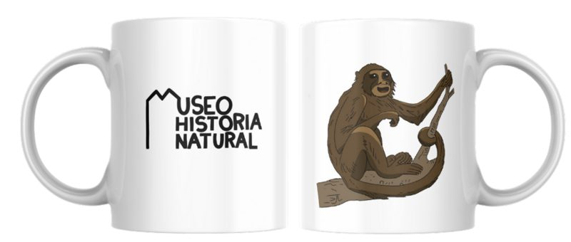

Herbario UIS
RNC 030, desde 1978. 20.265 registros publicados de 4.229 especies y 336 familias, con 14 ejemplares tipo, distribuidos en colección general, antoteca y carpoteca.
Escuela de Biología · Universidad Industrial de Santander
Un viaje fascinante a través de la vida y la ciencia. Recorre los ecosistemas de Santander en una experiencia multisensorial.
Reserva tu visitaLas colecciones biológicas son bibliotecas de la vida. Cada planta prensada, espécimen preservado, tejido crioconservado o cepa microbiana es evidencia irremplazable de la riqueza natural de nuestro territorio. En la Escuela de Biología de la UIS este patrimonio ha crecido durante casi seis décadas con un doble propósito: consolidar el acervo científico más importante sobre la biodiversidad del nororiente colombiano y abrir una ventana educativa a la comunidad a través de su Sala de Exhibición.
Un puente entre la ciencia y la comunidad desde 1988. Ejemplares taxidermizados y piezas osteológicas de los ecosistemas de Santander conviven con exposiciones interactivas, desde la fauna vertebrada e invertebrada hasta el reino Fungi, y con experiencias multisensoriales de paisaje sonoro, iluminación y proyección. Los recorridos son guiados por estudiantes de la Escuela de Biología y duran una hora.
 Ciénaga
Ciénaga Xerofítico
Xerofítico Cuevas
Cuevas Bosque seco tropical
Bosque seco tropical
Bosque húmedo tropical Bosque andino
Bosque andino
Páramo





La Escuela de Biología custodia tres colecciones registradas ante el Registro Único Nacional de Colecciones Biológicas (RNC) del Instituto Humboldt: el Herbario UIS (RNC 030), las colecciones del Museo de Historia Natural (RNC 042) y el Cepario LMMA-UIS (RNC 241). Las visitas a estas colecciones se agendan con el coordinador de cada colección.

RNC 030, desde 1978. 20.265 registros publicados de 4.229 especies y 336 familias, con 14 ejemplares tipo, distribuidos en colección general, antoteca y carpoteca.

RNC 042. 11.413 registros publicados: 6.966 de anfibios y 4.447 de reptiles.

RNC 042. 3.058 registros publicados de más de 480 especies, en pieles de estudio y en alcohol.

RNC 042, desde 2004. 1.831 registros de 105 especies, con holotipos y paratipos.

RNC 042. 828 registros publicados de 137 especies, en pieles, cráneos y alcohol.

RNC 042, desde 1975. Unos 10.000 ejemplares de insectos en seco y en líquido.

RNC 042, desde 1989. Unos 4.200 lotes de fitoplancton, zooplancton, perifiton y macroinvertebrados acuáticos.

RNC 042, desde 2018. Más de 1.027 muestras criopreservadas entre −80 °C y −150 °C, vinculadas a ejemplares del museo y del herbario.

RNC 241, desde 2018. 1.290 registros de bacterias, arqueas y hongos de 138 especies, criopreservados a −80 °C.
¿Qué se ha encontrado en tu municipio? Elige cualquier municipio de Santander y descubre cuántos especímenes de allí guarda el museo y cuáles son sus especies más registradas.
Explorar por municipioEntre abr 2025 y feb 2026 registramos 95 visitas realizadas, con 530 personas. El grupo más numeroso: colegios, con el 38 % de los visitantes.
| Mes | Personas |
|---|---|
| abr 2025 | 203 |
| may 2025 | 271 |
| jun 2025 | 46 |
| jul 2025 | 1 |
| feb 2026 | 9 |
Fuente: agenda de reservas del museo. Solo se cuentan las visitas marcadas como realizadas; los meses que no aparecen no tienen esa marca en la agenda, así que el número real de visitantes es mayor. El tipo de visitante se estima a partir de las notas de cada reserva; los grupos grandes sin descripción aparecen como «otros grupos».
Novedades del museo y los colegios que nos han visitado últimamente. ¡Gracias por recorrer con nosotros los ecosistemas de Santander!
Aunque los estudiantes de la UIS están en receso académico, el museo sigue funcionando hasta el 17 de diciembre. Aprovecha para visitarnos con tu familia, tu colegio o tus amigos.
Reservar por WhatsAppUn grupo de 19 visitantes recorrió la sala de exhibición.
18 visitantes de este colegio público conocieron la sala de exhibición.
Recibimos dos grupos, con 39 visitantes en total.
Dos grupos, con 42 visitantes, llegaron desde Piedecuesta.
Tres grupos, con 54 visitantes, vinieron desde Lebrija.
La visita más grande del semestre: 15 grupos y 381 visitantes de Barrancabermeja recorrieron el museo durante cinco días.
Llévate un recuerdo de tu visita. Estos productos, con ilustraciones de la fauna y la flora de Santander, están a la venta en el museo.

Cerámica, interior blanco, 11 oz. Incluye caja individual.
$45.000

Cerámica, interior blanco, 11 oz. Incluye caja individual.
$30.000

Aluminio, tapa con cierre de rosca, 500 ml. Incluye caja individual.
$45.000

Tela durazno, manga corta, estampado de especies de fauna y flora. Tallas S, M, L y XL.
$50.000
La atención al público es solo con reserva previa por WhatsApp. Atendemos de lunes a sábado, según disponibilidad. La experiencia dura una hora.
Colegios y grupos grandes también deben reservar. La reserva se confirma al presentar el comprobante de pago. Las boletas se adquieren en La Tienda Universitaria UIS.
Reservar por WhatsAppUniversidad Industrial de Santander, Carrera 27 con Calle 9, Bucaramanga. Ver en el mapa
| Visitantes individuales | |
|---|---|
| Comunidad general | $18.500 |
| Comunidad UIS · lunes, miércoles y viernes | $12.300 |
| Comunidad UIS · martes y jueves | $9.300 |
| Menores de 7 años y mayores de 70 | Entrada libre |
| Expediciones familiares | |
| Grupos de hasta 5 personas | $61.500 |
| Delegaciones escolares | |
| Estudiantes de colegios públicos | $6.200 |
| Estudiantes de colegios privados | $12.300 |
| Guías escolares (profesores) | Entrada libre |
Tarifas reguladas por la Resolución Rectoral N.º 908 del 3 de julio de 2007 de la UIS. Según su artículo 2.º, se incrementan cada año en el mismo porcentaje que el salario mínimo legal mensual vigente, por lo que los valores se actualizan anualmente.